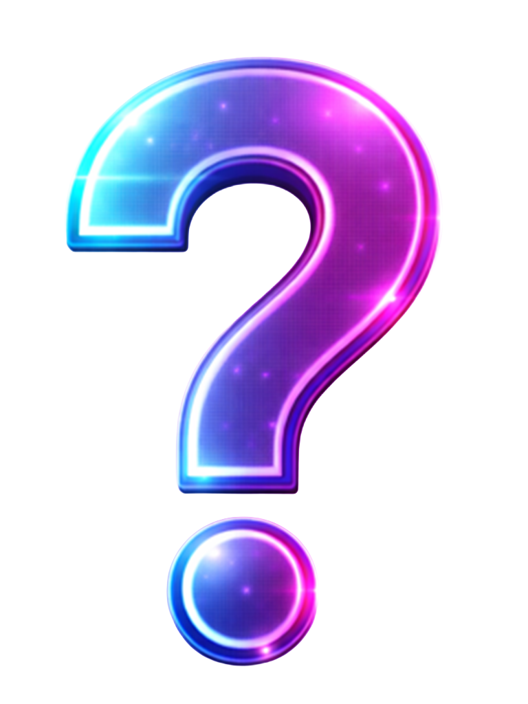

Lesson

16th Notes: Adding Movement & Energy
Sixteenth notes (also called "1/16 notes") are twice as fast as eighth notes. While eighth notes give you the "1 & 2 & 3 & 4 &" groove, sixteenth notes add an extra subdivision—the "e" and "a" between each beat. In this lesson, you'll learn to add selective sixteenth notes to create forward momentum and anticipation. This technique is used extensively in hip-hop, trap, funk, and modern electronic music to make beats feel more dynamic and energetic.
Four Hits Per Beat
A sixteenth note is 1/4 the length of a quarter note. Counted as "1 e & a, 2 e & a, 3 e & a, 4 e & a", where each syllable is a 16th note. In a 16-step grid, you have 4 steps per beat—all 16 steps are sixteenth notes.
Why it matters: 16th notes add detail and complexity without changing the underlying groove.

Selective Placement
Less is More
You could play hi-hats on all 16 steps, but that would sound busy and exhausting. Instead, use selective 16th notes—add just 1-2 extra hits in strategic places to create anticipation. In this lesson, you add step 8 (the "e" of beat 2) for a subtle push before the snare.
Why it matters: Strategic placement creates tension and release more effectively than constant 16th notes.

Anticipation
Push Forward
Adding a 16th note just before a strong beat (like the snare on 2 and 4) creates anticipation. The listener subconsciously expects the snare, and that extra hi-hat makes the resolution feel more satisfying. It's like a drum "run-up" before the impact.
Why it matters: Anticipation is what separates boring loops from grooves that make people move.

Genre Examples
Where You'll Hear This
Selective 16th-note hi-hats are everywhere: Hip-hop (creates bounce), Trap (double hi-hat rolls), Funk (syncopated hits), House (builds tension before drops). Listen to producers like Metro Boomin, J Dilla, or Daft Punk—they all use this technique.
Why it matters: Understanding 16th notes opens the door to modern production techniques.
Adding the "e" of Beat 2 (Step 8)
Comparison: Before & After Adding Step 8
Before (Eighth Notes Only):
After (Step 8 Added - The "e" of Beat 2):
1 e & a
2 e & a
3 e & a
4 e & a
How to Count 16th Notes
Full count: "1 e & a, 2 e & a, 3 e & a, 4 e & a"
- 1, 2, 3, 4 = downbeats (quarter notes)
- & = "and" (eighth notes)
- e = "ee" (first 16th between beats)
- a = "ah" (second 16th between beats)
Step 8 is the "e" of beat 2—it comes just before the "&" that precedes the snare on beat 2.
 Common Mistakes with 16th Notes
 Adding Too Many 16th Notes
Adding Too Many 16th Notes
Beginners often add 16th notes on every step (all 16), making the beat sound frantic and exhausting. Constant 16th-note hi-hats lose their impact.
✓ Fix: Use 16th notes selectively. One or two strategic hits create far more impact than filling every gap.
Clicking the Wrong Step
Step 8 is specific—it's the "e" of beat 2. Clicking step 6 (the "a" of beat 1) or step 7 (the "&" of beat 2) creates a different feel that doesn't work as well.
✓ Fix: Double-check you're clicking step 8 exactly. Count "2 e" out loud to verify timing.
Why 16th Notes Elevate Your Production
-
 Professional Polish: Amateur beats often have perfect timing but feel static. Adding selective 16th notes creates micro-movements that make beats sound professional and alive.
Professional Polish: Amateur beats often have perfect timing but feel static. Adding selective 16th notes creates micro-movements that make beats sound professional and alive.
-
Anticipation & Release: That extra hi-hat creates tension ("here it comes...") followed by the satisfying snare hit. This push-pull dynamic is what makes grooves feel compelling.
-
Genre Signature: Hip-hop, trap, and modern R&B rely heavily on selective 16th-note hi-hats. This technique is literally part of these genres' DNA.
-
Gateway to Advanced Techniques: Once you understand selective 16th notes, you can explore triplets, 32nd-note rolls, swing, and other advanced rhythmic concepts.
What's Next?
In Lesson 5, you'll learn about open vs closed hi-hats and how to create dynamic contrast by using both sounds together. This adds another layer of expression to your drum patterns.